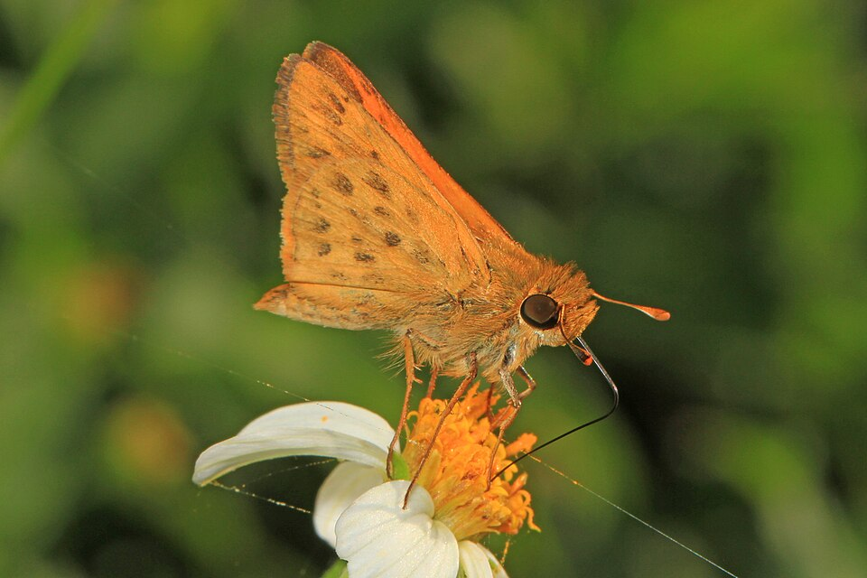
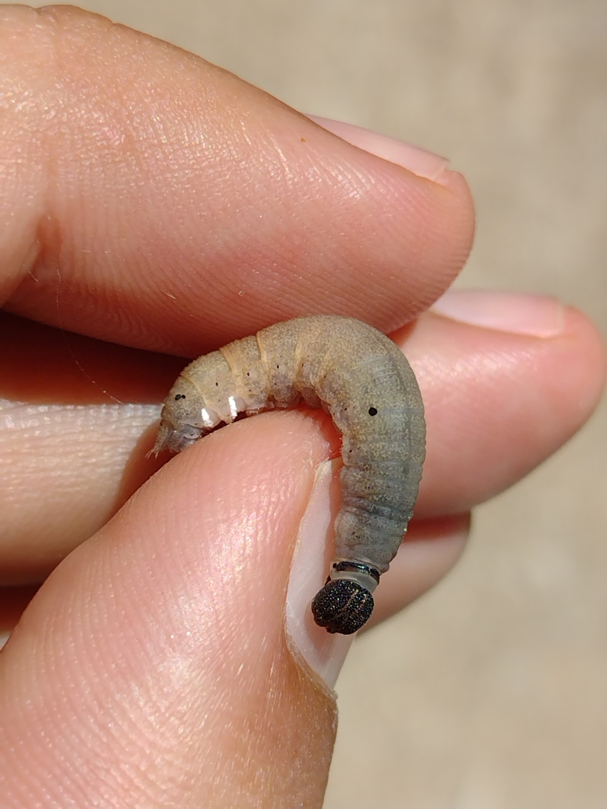

Hylephila phyleus
Common nowThe small orange skipper on St. Augustine and Bermuda. Photographed through mid-August. If it stays low over the lawn, start here.

Lawns, weedy grass, parks, roadsides.
Bermudagrass
Cynodon dactylonSt. Augustinegrass
Stenotaphrum secundatumcrabgrass
Digitaria spp.Whirlabout has big brown blotches under the hindwing. Fiery male has small scattered black dots below.